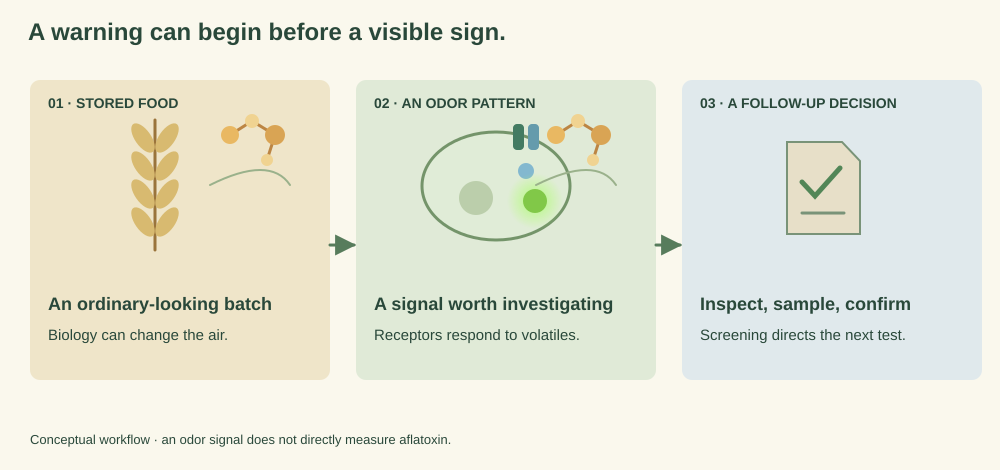
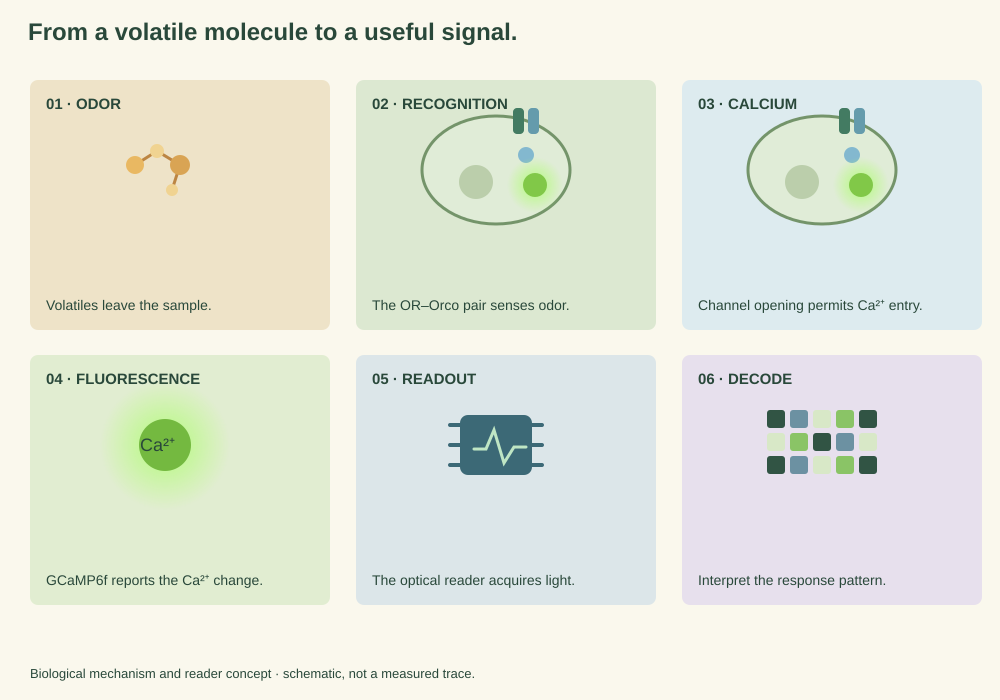

How AeroSense works
The Problem — When We See Spoilage, We May Already Be Late
Fungi and deteriorating biological materials release complex mixtures of volatile organic compounds (VOCs). These fingerprints change with species, substrate, environmental conditions, and growth stage, making VOCs promising non-destructive indicators of food and agricultural deterioration [1] Gu et al., 2019 — full entry in References. [2] Jiarpinijnun et al., 2020 — full entry in References. [3] Gu et al., 2022 — full entry in References. [4] Sanislav et al., 2025 — full entry in References. . Timing is the issue: by the time spoilage is obvious, the useful inspection window may already have closed.

Conceptual schematic.
In controlled rice studies, electronic-nose and headspace GC–IMS methods have distinguished fungal contamination before visible growth, including discrimination of inoculated samples within approximately 24–48 hours under controlled experimental conditions [1] Gu et al., 2019 — full entry in References. [2] Jiarpinijnun et al., 2020 — full entry in References. [3] Gu et al., 2022 — full entry in References. . Those times are literature results from existing VOC methods. They are not AeroSense measurements.
Powerful analytical methods already exist. GC–MS and related chromatographic methods provide detailed chemical information, while electronic noses can provide rapid pattern-based measurements. We therefore do not argue that food VOC sensing is an unsolved field. Instead, our project addresses a different engineering question: can biological odorant receptors provide a modular recognition layer that can eventually be coupled to a compact, calibrated measurement system?
Sensor-based electronic noses have shown impressive results across food applications, but reviews continue to identify sensor drift, environmental interference, calibration, odor differentiation, model generalization, and real-world standardization as important challenges [4] Sanislav et al., 2025 — full entry in References. . AeroSense explores a complementary biological sensing architecture rather than claiming to replace all existing analytical technologies.
From a signal to a decision
For a warehouse or quality-control workflow, the useful question is rarely:
Not this
“What was the raw sensor voltage?”
But this
“Has this batch begun to deviate from its reference state, and should we inspect it now?”
This distinction became central to our project. AeroSense is therefore being designed around risk-oriented screening information, together with signal quality, confidence, calibration status, and a recommendation for follow-up testing.
AeroSense asks one question: can we engineer a complete sensing chain that turns these invisible chemical changes into reliable and actionable early-warning information? Our answer combines three engineering layers around a synthetic-biology core. We use Drosophila odorant receptors as programmable biological recognition elements, a dedicated weak-fluorescence reader to recover their optical responses, and a fly-inspired computational framework to decode receptor-response patterns. Together, these modules form a continuous Sense → Read → Decode → Act pipeline. The first application we are pursuing in 2026 is early fungal-risk screening for high-value food and agricultural products during storage and incoming quality control.
Why Biological Olfaction?
Natural olfactory systems do not identify an odor using a single perfectly specific receptor. Instead, odors are represented by combinations of receptor activity, followed by neural transformations that make overlapping patterns easier to distinguish.
In insects, odorant recognition involves a tuning odorant receptor (OR) together with the conserved odorant receptor co-receptor Orco. Activation of the OR–Orco complex forms a cation-conducting sensory response (insect ORs are not GPCRs), converting chemical recognition into a cellular signal [5] Zboray et al., 2023 — full entry in References. [6] Jones et al., 2011 — full entry in References. . Construct-level mechanism and architecture: Design · how AeroSense senses. VUAA1, an Orco agonist, provides a useful experimental positive control for testing the functionality of this sensing pathway [6] Jones et al., 2011 — full entry in References. .
Importantly, this idea already has strong experimental precedent. Zboray et al. established stable HEK293 cell lines expressing seven Drosophila odorant receptors, Orco, mCherry, and the genetically encoded calcium indicator GCaMP6. Their panel was characterized against 66 VOCs and demonstrated that heterologously expressed insect olfactory receptors can generate measurable fluorescence responses to diverse volatile ligands [5] Zboray et al., 2023 — full entry in References. .
GCaMP6 is a genetically encoded calcium indicator developed for sensitive fluorescence reporting of intracellular calcium dynamics [7] Chen et al., 2013 — full entry in References. . We use this optical signal as the interface between biological recognition and our electronic measurement layer.

Conceptual schematic.
Terms used in this section
Short definitions are listed here so they are never only inside a tooltip. On desktop, dotted terms also open a glossary popover on hover or focus; on a phone, the same terms can be tapped, and this list remains visible.
- VOC
- Volatile organic compound — a carbon-containing chemical that readily enters the gas phase at ambient conditions.
- OR
- Odorant / olfactory receptor — a receptor protein that binds odorant molecules and, with Orco, initiates an olfactory signal.
- Orco
- Odorant receptor co-receptor — the conserved insect co-receptor that partners with ORs to form a ligand-gated cation channel.
- GCaMP
- A genetically encoded fluorescent calcium indicator. GCaMP6 reports intracellular Ca²⁺ changes as fluorescence; it is not an AeroSense invention.
- VUAA1
- A synthetic Orco-family agonist used as an experimental positive control for OR–Orco channel function — not an AeroSense invention.
Established prior work
Heterologous Drosophila OR/Orco + GCaMP-based sensing already has published precedent. Zboray et al. expressed insect ORs with Orco and GCaMP6 in HEK293 cells and recorded fluorescence responses to diverse VOCs [5] Zboray et al., 2023 — full entry in References. . Jones et al. established VUAA1 as an Orco agonist for functional control of this pathway [6] Jones et al., 2011 — full entry in References. . GCaMP6 itself is a published genetically encoded calcium indicator [7] Chen et al., 2013 — full entry in References. .
The use of Drosophila OR/Orco and GCaMP in mammalian cells is not our invention.
Our engineering question
How can this biological sensing architecture be adapted, measured, decoded, calibrated and integrated into a reproducible bio-digital workflow?
AeroSense builds on that established architecture. It does not claim to have invented the receptor, the co-receptor, the calcium indicator, or the agonist control.
Before building a reader, we watched fluorescence change
We first used light-sheet microscopy to locate a TH-associated fluorescent signal in the fly preparation and observe what happened during three odor presentations: isopentyl acetate, 3-octanol and 4-methylcyclohexanol. The supplied recording and exploratory plots show fluorescence changes across selected image regions around those presentations. This offered a visual starting point for asking how odor-dependent biological signals might be captured as data.

Select Play to load the recording.


Interpretation boundary. These files alone do not establish TH-cell identity, sample size, stimulus timing at the specimen, motion correction, replicate consistency or the mechanism of each fluorescence change. They do not validate our proposed OR/Orco–GCaMP cell sensor or hardware reader. Avishai and Parnas (2025) provides context for TH-associated neurons and odor-dependent dopaminergic modulation in the fly antennal lobe; that paper used structural and two-photon functional imaging, not our light-sheet method.
Follow the signal
Follow five glowing waypoints: fly toward an odor source, then switch perspective to an odor molecule and trace how a separate engineered cell, optical reader, and decoder would handle the signal. This is a conceptual illustration, not experimental data or a simulation of fly behavior.
Follow the signal
A fruit fly follows an odor.
Reach each luminous waypoint. Then follow one odor cue into the engineered sensing system.
Conceptual interactive · not experimental data
Interactive 3D view unavailable on this device.
The interactive was skipped. The same conceptual path is written below, then the technical layers continue.
-
01 · Odor plume
Something changes before we see it.
Stored food can release changing volatile patterns as biological and environmental conditions evolve.
-
02 · Olfaction
One odor. Many receptors.
Fruit-fly olfaction inspired AeroSense to treat odors as patterns rather than single sensor values.
-
03 · Receptor / cell
We borrowed the receptor.
OR / Orco → HEK293T → Ca²⁺ → GCaMP. AeroSense is engineering living cells to translate receptor activation into measurable fluorescence.
-
04 · Reader
A glow is not yet a measurement.
LIGHT → PD → TIA → ADC. Our reader is designed to convert weak optical responses into usable digital signals. FDM and digital lock-in processing are designed to isolate synchronized signal components from unrelated background variation.
-
05 · FDM / DLIA
Find the signal in the noise.
FDM and digital lock-in processing are designed to isolate synchronized signal components from unrelated background variation.
-
06 · Decoder / Act
From signal to a reason to look closer.
AeroSense is being developed as an early-screening layer for fungal-associated odor-pattern changes in stored food. Sense → Read → Decode → Act.
Read this journey as text
The same path, without the interaction
AeroSense is being developed to re-encode environmental odor information through biology, electronics, and computation. The walkthrough is a conceptual illustration of that chain, not a simulation of fly behavior and not experimental data.
Something changes before we see it.
Stored food can release changing volatile patterns as biological and environmental conditions evolve. A fruit fly can follow that airborne plume long before the food looks different.
One odor. Many receptors.
Fruit-fly olfaction inspired AeroSense to treat odors as patterns rather than single sensor values. The drawing does not reproduce an exact Drosophila recording.
We borrowed the receptor.
OR / Orco → HEK293T → Ca²⁺ → GCaMP. AeroSense is engineering living cells to translate receptor activation into measurable fluorescence.
A glow is not yet a measurement.
LIGHT → PD → TIA → ADC. Our reader is designed to convert weak optical responses into usable digital signals.
Compare response patterns.
The illustrated network moves from receptor inputs through contrast processing to a sparse representation. It introduces the fly-inspired decoding design; it is not a measured AeroSense response or classification result.
From signal to a reason to look closer.
AeroSense is being developed as an early-screening layer for fungal-associated odor-pattern changes in stored food. It is not a mycotoxin assay and does not replace formal food-safety testing.
Sense → Read → Decode → Act
One signal. Four connected steps.
Select a step to follow the measurement chain—from an odor cue to a screening decision.
Explore the measurement chain · conceptual overview
VOC → biological fluorescence
VOC → OR/Orco on HEK293T → Ca²⁺ → GCaMP fluorescence → optical output. Schematic, not a structure.
~470 nm LED → weak fluorescence → photodiode → LMP7721 TIA → ADS8866 ADC → ESP32 · FDM / digital lock-in. No measured SNR is shown.
Conceptual transformation — computational inspiration, not a recorded panel
- Overlapping responses
- Normalization
- AL-inspired contrast
- MB-inspired sparse map
- Classifier / SNN-like out
- 01Check measurement qualityBaseline · calibration · QC
- 02Interpret the patternResponse · confidence · context
- 03Choose a follow-upRemeasure · monitor · confirm
Recognize an odor. Reveal a signal.
We express Drosophila odorant receptors (ORs) with Orco in HEK293T cells, adapting a published heterologous olfactory-receptor strategy [5] Zboray et al., 2023 — full entry in References. . Receptor activation drives a Ca²⁺ response, which GCaMP6f translates into green fluorescence. mCherry provides a separate expression reporter.
Does the sensing chain respond to a positive control? Does the chosen receptor respond to the target VOC? We use VUAA1 as a functional positive-control stimulus before receptor-specific characterization.
Explore in depth Design Experiments Parts
Recover a small change in light.
Approximately 470-nm modulated excitation illuminates the sensor. A photodiode converts weak fluorescence into current; an LMP7721 transimpedance amplifier and ADS8866 ADC prepare the signal for acquisition with an ESP32.
Distinct modulation frequencies separate the optical channels. Digital lock-in detection recovers the corresponding periodic signals from background noise. Both principles build on published fluorescence and analytical-instrument methods [8] Tovar et al., 2019 — full entry in References. [9] Harvie & de Mello, 2023 — full entry in References. .
Excitation leakage, ambient light, electronic noise and channel crosstalk must be controlled together.
Explore in depth Hardware
Read the pattern across receptors.
A single receptor response is only part of the story. Fly olfaction provides inspiration for representing combinations of inputs as sparse activity patterns [10] Caron et al., 2013 — full entry in References. .
Our pipeline normalizes the receptor response, enhances contrast with an antennal-lobe-inspired stage, and projects the result into a sparse representation inspired by mushroom-body coding. A classifier then interprets the pattern. The computational analogy builds on work connecting fly olfaction with similarity search [11] Dasgupta et al., 2017 — full entry in References. .
Compare with simpler baselines, then examine noise robustness, concentration shifts and the contribution of each processing stage.
Explore in depth Model
Connect the signal to a decision.
The readout brings measurement quality and the decoded pattern together. Baseline, ΔF/F, calibration, quality flags and confidence give context to a screening signal.
Remeasure an uncertain sample, increase monitoring, isolate a suspect batch or request confirmatory testing. The appropriate response depends on the use case and the evidence.
Explore in depth Integrated Human Practices
The AeroSense measurement chain.
What We Build On — and What We Add
Our central contribution is the integration and engineering of these ideas into one traceable measurement chain—not the reinvention of each individual component.
The left column is published literature. The right column is AeroSense-specific engineering. Established methods are not described as our inventions.
| Prior work | What it established | What AeroSense specifically adds |
|---|---|---|
| Prior work Established prior work Zboray et al. [5]Zboray et al., 2023 — full entry in References. | What it establishedDrosophila OR/Orco + GCaMP can function in HEK293 cellular sensing systems | What AeroSense specifically addsAdaptation to our constructs, receptor panel, HEK293T workflow and downstream instrument |
| Prior work Established prior work Jones et al. [6]Jones et al., 2011 — full entry in References. | What it establishedOrco activation and VUAA1 functional agonism | What AeroSense specifically addsPositive-control logic for our sensing chain |
| Prior work Established prior work GCaMP6 [7]Chen et al., 2013 — full entry in References. | What it establishedSensitive genetically encoded calcium fluorescence | What AeroSense specifically addsOptical interface between receptor activity and electronics |
| Prior work Established prior work FDM fluorescence [8]Tovar et al., 2019 — full entry in References. | What it establishedFrequency-tagged excitation can be demultiplexed using one detection stream | What AeroSense specifically addsCustom multi-channel biological fluorescence reader |
| Prior work Established prior work Digital lock-in systems [9]Harvie & de Mello, 2023 — full entry in References. | What it establishedSynchronous detection can recover weak periodic optical signals | What AeroSense specifically addsEmbedded implementation with ESP32 acquisition and AeroSense calibration workflow |
| Prior work Established prior work Fly mushroom-body coding [10]Caron et al., 2013 — full entry in References. [11]Dasgupta et al., 2017 — full entry in References. | What it establishedSparse high-dimensional olfactory representations | What AeroSense specifically addsDecoder designed around our receptor-response dataset |
How the layers depend on one another
AeroSense is one chain. A later layer only means something if the earlier ones are in place.
-
A
Construct
Did we build what we intended?
Sequence verification, construct maps, expression.
-
B
Functional sensing
Does the biological transduction chain work?
VUAA1 positive control, negative controls, reproducible ΔF/F.
-
C
VOC characterization
Do receptors generate reproducible VOC-response patterns?
Receptor × VOC × concentration × time matrix.
-
D
Measurement
Can the custom reader measure weak signals reliably?
Dark noise, linearity, SNR, leakage, crosstalk, calibration.
-
E
Decode
Does the neuromorphic architecture add useful information?
Baseline comparison, ablation, robustness, held-out performance.
-
F
Integration
Does the complete data chain close?
Microscope versus AeroSense comparison, end-to-end demonstration.
-
G
Food context
Does the signal arrive early enough to matter?
Controlled headspace test, time-to-detection, false positives and negatives, actionable threshold.
Human Practices Changed the Question We Were Asking
External feedback changed which application we pursue first, and what the system is supposed to output.
-
Stakeholder / Feedback
Early idea
AeroSense began as a broad biological VOC-sensing platform with possible applications across agriculture, food, environmental sensing and medicine.
External feedback challenged this framing.
-
Insight
A platform is not automatically a product
A technically versatile platform is not automatically a useful solution if the first user, decision, and value are unclear.
-
Design decision
2026 focus
We therefore narrowed the 2026 application to early fungal-risk screening in high-value food and agricultural storage and incoming QC, while retaining other VOC applications as future directions rather than current claims.
-
Technical consequence
Output changed
Instead of stopping at “we detected a signal,” AeroSense is being designed around:
Biological change → VOC pattern → measurement → risk-oriented interpretation → follow-up action
These decisions now influence our validation metrics, user interface, calibration strategy and future cartridge design.
Integrated Human Practices — How stakeholder feedback changed AeroSense
What AeroSense Is — and Is Not
Scientific credibility depends as much on defining boundaries as on presenting possibilities. The two columns below are a scope definition, not a warning list.
AeroSense is intended to be
- an early-warning and screening platform;
- a way to study and measure engineered olfactory-receptor responses;
- a modular bio-digital architecture connecting synthetic biology, measurement and computation;
- a system whose output can prioritize further inspection or confirmatory testing.
AeroSense is not currently claimed to be
- a direct mycotoxin assay;
- a replacement for microbiological culture, GC–MS, GC–IMS or validated regulatory testing;
- a universal identifier for every VOC mixture;
- a clinically or industrially validated diagnostic device;
- a demonstrated solution for every food, crop or disease.
Future field implementations Future field-facing implementations must also physically contain the engineered cellular sensing element and prevent contact with food, users and the environment.
What comes next
These are the steps that still follow from the architecture on this page.
Related wiki pages
The Description page states the architecture and the claims we are and are not making. Layer detail lives on the pages below.